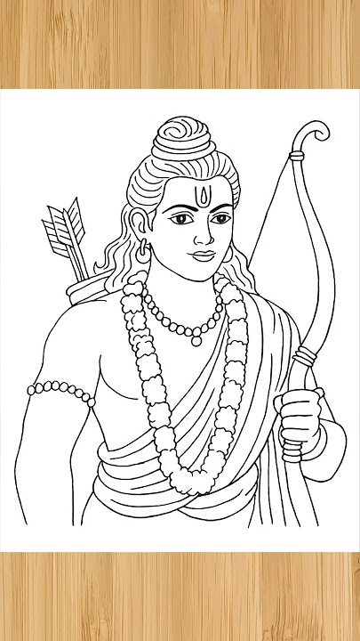

🙏 🪷 🙏
Sri Ram Naam Jap
Chant with devotion • Feel the peace • Jai Shri Ram

Total Sri Ram Chants
0
Chants remaining to complete the image:
108
0% completed
🎤 Or chant using your microphone:
Click Start Chanting to begin.
॥ जय श्री राम ॥
May the divine name of Sri Ram bring peace to your heart. 🪔